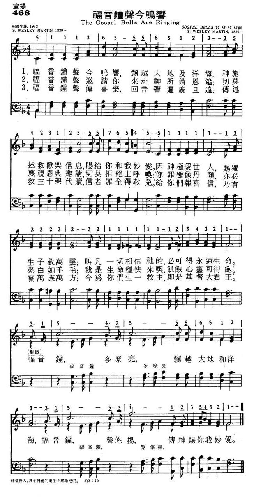

|
|
|
|
1. The Gospel bells are ringing, Refrain 2. The Gospel bells invite us 3. The Gospel bells give warning, 4. The Gospel bells are joyful, |
468福音钟声今鸣响
1.福音钟声今鸣响，飘越打底及洋海；
神施拯救欢乐信息，赐给你和我妙爱。 因神极爱世人，赐独生子就万灵； 叫凡一切相信他的，必可得永远生命。 福音钟，多嘹亮，飘越大地和洋海， 福音钟，声悠扬，传神赐你我妙爱。 2.福音钟声邀请你，来赴神所备恩筵； 切莫蔑视恩典邀请，切莫拒绝主呼唤； ‘你罪虽像丹颜，亦必洁白如羊毛； 我是生命粮快来食，饥饿心灵可得饱。’ 3.福音钟声传喜乐，回音响遍广且远； 传述救主十架代赎，信者罪全得赦免。 ‘给你们报喜信，乃有关万族万方； 今为你们生一救主，即是基督大君王。 |
|
https://www.mred365.cn/szxg/7471.html
 https://hymnary.org/hymn/CHoF1944/page/402
|
|
|
|
|


- 台語聖詩464Hok-im cheng siaⁿ teh tōa tân福音鍾聲咧大霆 https://youtu.be/Eh81KHAS1Iw
- gospel bells (barbara jones) https://youtu.be/42XO_ksFhCw
- The Gospel bells are ringing - Gospel Hymns https://youtu.be/tWKAKikabj8
| Text: | The Gospel Bells Are Ringing |
| Author: | S. W. M. |
| Tune: | [The Gospel bells are ringing] |
| Composer: | S. Wesley Martin |
| Short Name: | S. Wesley Martin |
| Full Name: | Martin, S. (Samuel) Wesley, b. 1839 |
| Birth Year: | 1839 |
| Death Year (est.): | 1939 |
Martin, Samuel Wesley, author of "The Gospel Bells are ringing" (The Gospel Message), was born at Plainfield, Illinois, Jan. 20, 1839.
--John Julian, Dictionary of Hymnology, Appendix, Part II (1907)
==================
Born: January 20, 1839, Plainfield, Illinois.
Martin was organist and choirmaster at St. Chrysostom’s Episcopal Church, Chicago, Illinois (1896-1902). His works include:
Tune Information
| Title: | [The Gospel bells are ringing] (Martin0 |
| Composer: | S. Wesley Martin |
| Meter: | 7.7.8.7.6.7.8.7 |
| Incipit: | 51113 65556 51233 |
| Key: | F Major |
| Copyright: | Public Domain |
"THE GOSPEL BELLS" hymnstudiesblog
"For God so loved the world, that He gave His only begotten Son…" (Jn. 3.16)
INTRO.:
A song which points out that evangelism involves ringing out the gospel message that God so loved the world that He gave His only Son is "The Gospel Bells." The text was written and the tune was composed both by Samuel Wesley Martin who was born at Plainfield, IL, on Jan. 20, 1839. The song was originally titled "The Gospel Message," but no other information about its origin or source of publication is available. It was undoubtedly included in one of Ira D. Sankey’s "Gospel Hymns" series, because it appears in the Gospel Hymns Nos. 1 to 6 Complete, published jointly by The Biglow and Main Co. of New York City, NY, and The John Church Co. of Cincinnati, OH, in 1894. The preface to this volume says, "Gospel Hymns Nos. 1 and 2 by P. P. Bliss and Ira D. Sankey; Nos. 3, 4, 5, and 6, by Ira D. Sankey, James McGranahan, and Geo. C. Stebbins, are now compiled in this volume under the title of Gospel Hymns Nos. 1 to 6. All duplicate pieces have been omitted and the Hymns renumbered in consecutive order from 1 to 739." In that volume, "The Gospel Bells" is No. 125. I have not been able to locate any other facts about Martin, including the time and place of his death. Among hymnbooks published by members of the Lord’s church during the twentieth century for use in churches of Christ, the song appeared in the 1937 Great Songs of the Church No. 2 edited by E. L. Jorgenson. An arrangement of the text, beginning, "Hark, the gospel bells," with a tune (Harwell) by Lowell Mason usually associated with Thomas Kelley’s "Hark! Ten Thousand Harps and Voices," was used in the 1963 Christian Hymnal edited by J. Nelson Slater.
The song emphasizes the importance of sounding out the gospel message as clear as a bell.
I. In stanza 1, the gospel bells bring news of salvation
"The gospel bells are ringing Over land from sea to sea;
Blessed news of free salvation Do they offer you and me.
‘For God so loved the world That His only Son He gave;
Whosoe’er believeth in Him Everlasting life shall have.’"
A. The gospel message is intended to go over land and sea to the uttermost part
of the earth: Acts 1.8
B. The purpose of sounding out the gospel message is to offer salvation to all
mankind: Rom. 1.16
C. This salvation is based on the fact that because God loved us Christ died
for our sins: Rom. 5.8
II. In stanza 2 the gospel bells bring an invitation to a feast
"The gospel bells invite us To a feast prepared for all;
Do not slight the invitation, Nor reject the gracious call.
‘I am the bread of life; Eat of Me, thou hungry soul,
Though your sins be red as crimson, They shall be as white as snow.’"
A. This invitation is extended to whosoever will: Rev. 22.17
B. The invitation is to feast upon the bread of life: Jn. 6.35
C. The result of eating the bread of life is that our sins which are like
crimson shall be as white as snow: Isa. 1.18
III. In stanza 3 the gospel bells bring a warning
"The gospel bells give warning, As they sound from day to day,
Of the fate which doth await them Who forever will delay.
‘Escape ye, for thy life; Tarry not in all the plain,
Nor behind thee look, oh, never, Lest thou be consumed in pain.’"
A. While the gospel brings good news to those who will hear, it brings a
warning also: Col. 1.18
B. This warning is for those who will delay, because now is the time: 2 Cor.
6.2
C. Such a warning to escape sin while there is time is similar to that given to
Lot and his family to escape Sodom: Gen. 19.17
IV. In stanza 4 the gospel bells bring joy
"The gospel bells are joyful, As they echo far and wide,
Bearing notes of perfect pardon, Through a Savior crucified.
‘Good tiding of great joy To all people do I bring,
Unto you is born a Savior, which is Christ the Lord’ and King."
A. The gospel is a message of joy in the Lord: Phil. 4.4
B. The reason for this joy is that the Savior was crucified for us: 1 Cor. 2.2
C. Such joy was announced to the world even when Jesus was born: Lk. 2.10-11
CONCL.:
The chorus continues to point out the need to sound the gospel message
everywhere.
"Gospel bells, how they ring, Over land from sea to sea;
Gospel bells freely bring Blessed news to you and me."
It used to be a custom for churches to have bells put on their buildings to let
people know when it was time for services and to call them to worship. Some
people still like to hear church bells, but this practice is not as prevalent as
it used to be. However, far more important than the literal sound of church
bells should be the sending forth of the message figuratively portrayed by "The
Gospel Bells."
https://hymnstudiesblog.wordpress.com/2009/06/10/quotthe-gospel-bellsquot/